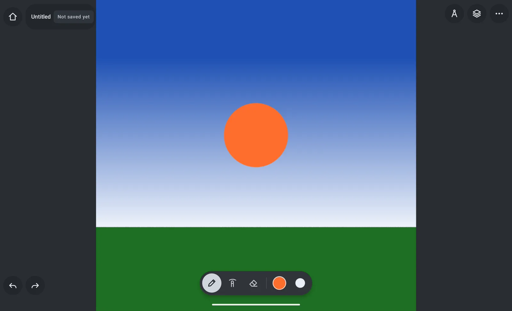
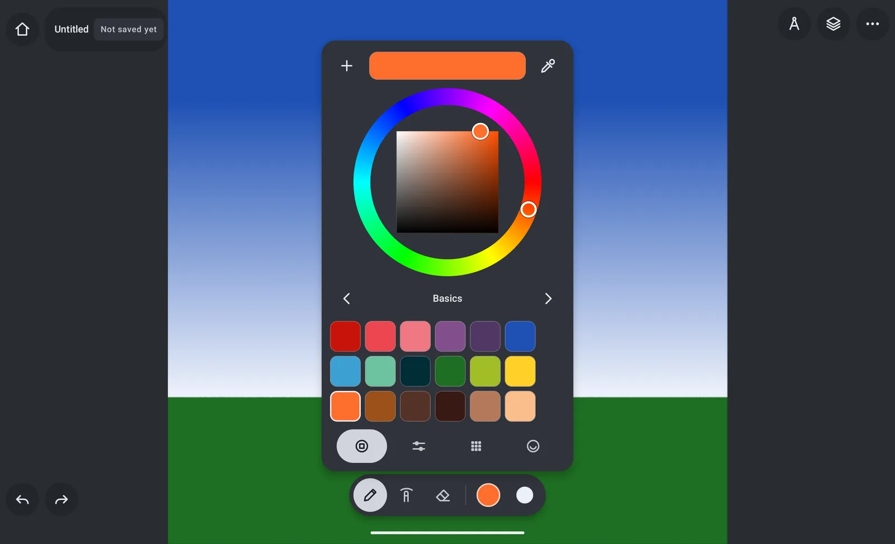
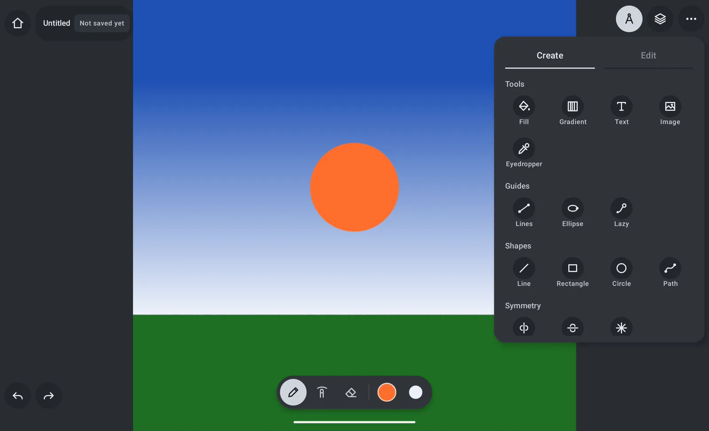
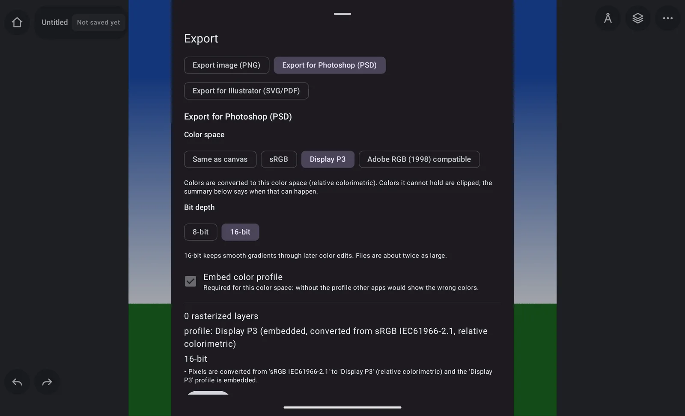

The canvas gets the screen
Controls float in the corners and a small dock holds brush, smudge, eraser and two colors. Everything else opens when you need it and closes when you are back to drawing.
Alpha test build · Android 10+ v0.1.0-alpha.1
A free, open-source drawing app for Android tablets. It works offline, keeps the canvas out of your way, and hands your work to Photoshop and Illustrator as layered PSD and SVG/PDF — with the color profile written in.
For most tablets and phones (arm64). Free · No account · No ads · No internet permission.

#1E50B4
#FF6E2D
#1E6E23
01 — What's inside
Controls float in the corners and a small dock holds brush, smudge, eraser and two colors. Everything else opens when you need it and closes when you are back to drawing.
Pencils, inks, calligraphy, markers, paint, watercolor, airbrush, chalk and pastel, nature (grass, leaves, fur, hair), effects (sparkles, bokeh, fog, rain, snow) and patterns. Build your own in the brush editor — image tips, paper grain, pressure, tilt and speed curves, jitter — or import Infinite Painter brushes (.przp, .prbr).
Hue wheel, HSB / RGB / LAB / CMYK sliders with hex, palettes including skin tones and your own, and a tone sphere for light and shade. Plus an eyedropper.
Fill, gradient, text, image import, line and ellipse rulers, stroke smoothing, shapes and pen paths, vertical / horizontal / radial symmetry, lasso, wand, transform, distort, color adjust, curves, crop and resize.
Raster and vector layers with blend modes, opacity, lock transparency, clipping and masks. Strokes on vector layers stay editable paths all the way to Illustrator.
Export CMYK PSD and PDF through a FOGRA39 offset profile or your print shop's own .icc, with the total ink and the colors that cannot be printed exactly shown before you export.
Layered PSD at 8 or 16 bits, and SVG / PDF for Illustrator with editable vector strokes, the original look, or both — every file carries its color profile.
The app does not even ask for internet access. Your artwork stays on your device until you export it, with autosave and crash recovery.
An independent Rust engine with a Kotlin / Jetpack Compose shell, MIT or Apache-2.0. Read it, build it, fork it.
02 — A look around



03 — Color you can account for
Every export carries its ICC profile. Choose the color space the file is written in, and Veskra tells you before you export what will be converted and what might be clipped.
Honest note: a tablet screen is not a calibrated monitor. The canvas is sRGB, and what you see depends on your display — the exported file is what stays exact.
no conversionIEC 61966-2.1wide gamut · ICCcompatible · ICCFOGRA39 · or your printer's .icc04 — Get it
Latest build: v0.1.0-alpha.1
Verify your download: SHA256SUMS.txt · All releases